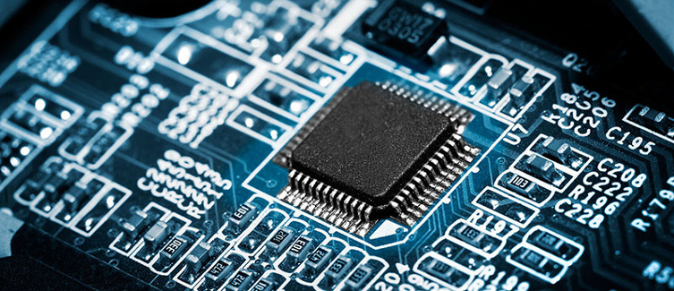

What’s computer Engineering??

Computer engineering (CoE or CpE) is a branch of engineering that integrates several fields of computer science and electronic engineering required to develop computer hardware and software.Computer engineers usually have training in electronic engineering (or electrical engineering), software design, and hardware-software integration instead of only software engineering or electronic engineering. Computer engineers are involved in many hardware and software aspects of computing, from the design of individual microcontrollers, microprocessors, personal computers, and supercomputers, to circuit design. This field of engineering not only focuses on how computer systems themselves work but also how they integrate into the larger picture.
Usual tasks involving computer engineers include writing software and firmware for embedded microcontrollers, designing VLSI chips, designing analog sensors, designing mixed signal circuit boards, and designing operating systems. Computer engineers are also suited for robotics research, which relies heavily on using digital systems to control and monitor electrical systems like motors, communications, and sensors.
In many institutions of higher learning, computer engineering students are allowed to choose areas of in-depth study in their junior and senior year because the full breadth of knowledge used in the design and application of computers is beyond the scope of an undergraduate degree. Other institutions may require engineering students to complete one or two years of general engineering before declaring computer engineering as their primary focus.[3][4][5][6]